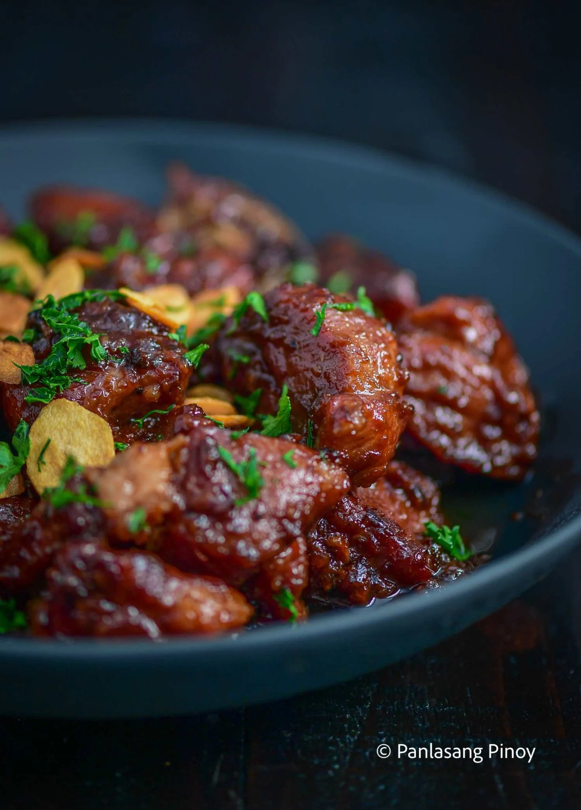

Pork Adobo

Description
This is a recipe post for Filipino Pork Adobo. It is a dish composed of pork slices cooked in soy sauce, vinegar, and garlic. There are version wherein onions are also added. Adobo is a popular dish in the Philippines, along with Sinigang.
Ingredients
- 3 lbs pork belly
- 5 bay leaves
- 5 garlic cloves - minced or crushed
- 4 tablespoons vinegar
- ½ cup soy sauce
- 1 tablespoon peppercorn
- 2 cups water
- Salt to taste
Instructions
- Combine the pork belly, soy sauce, and garlic then marinade for at least 1 hour.
- Heat the pot and put-in the marinated pork belly then cook for a few minutes.
- Pour remaining marinade including garlic.
- Add water, whole pepper corn, and dried bay leaves then bring to a boil. Simmer for 40 minutes to 1 hour.
- Put-in the vinegar and simmer for 12 to 15 minutes.
- Add salt to taste.
- Serve hot. Share and enjoy!